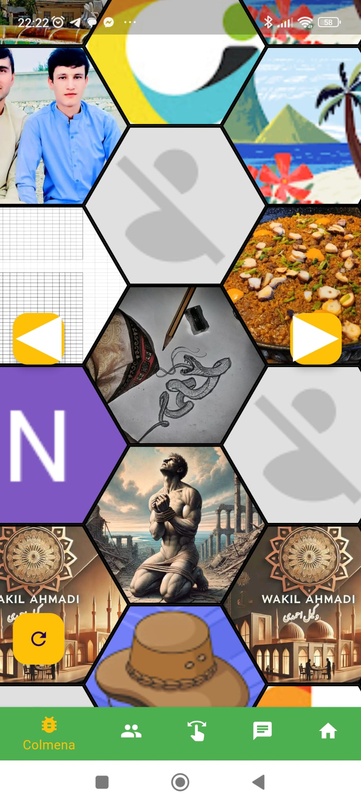

Guia prática do Sminos
Sminos é um aplicativo de redes sociais disponível no Google Play projetado para compartilhar imagens, textos, links e localizações de uma forma visualmente única. O que o diferencia é seu foco na apresentação de perfis em um formato de enxame hexagonal, o que torna a experiência atraente, intuitiva e diferente das plataformas tradicionais. A seguir, apresento tudo o que você precisa saber para começar a usar o Sminos:
Características principais do Sminos
- Design de perfis com hexágonos
- Os perfis são organizados em um enxame hexagonal, onde você pode adicionar várias imagens.
- Cada imagem que você enviar se transforma em um hexágono dentro do seu perfil, dando-lhe uma estrutura visual moderna e atraente.
- O enxame não só reflete suas publicações, mas também o conecta visualmente com outros usuários da plataforma.
- Compartilhar diferentes tipos de conteúdo
- Você pode compartilhar mais do que imagens:
- Texto para se expressar ou fornecer contexto.
- Links para páginas externas ou recursos.
- Localizações para mostrar lugares importantes ou interessantes.
- Explorar perfis de outros usuários
- Se um perfil chamar sua atenção no enxame, você pode clicar para ver mais detalhes sobre essa pessoa e explorar seu conteúdo mais a fundo.
- Isso incentiva conexões baseadas em interesses compartilhados e no que cada usuário decide mostrar.
- Interação com outros usuários
- Embora o foco principal seja o conteúdo visual e as informações que você compartilha, você pode interagir com outros perfis através do design intuitivo do aplicativo.
- Componentes gratuitos e pagos
- Sminos é principalmente gratuito, mas inclui opções pagas que podem melhorar sua experiência (como funções premium ou vantagens adicionais). Sminos Plus permite navegar sem anúncios, criar imagens com IA e permite adicionar mais de um tipo de conteúdo, ou seja, adicionar mais de 1 texto, mais de uma localização ou mais de um link.
Como começar a usar o Sminos
- Baixe o aplicativo
- Vá até Google Play e procure por "Sminos". Baixe e instale no seu dispositivo Android.
- Crie seu perfil
- Depois de instalar, crie sua conta. Você poderá configurar seu perfil adicionando imagens, textos e outros elementos que representem quem você é.
- Certifique-se de adicionar imagens interessantes, pois elas formarão os hexágonos do seu enxame.
- Explore o enxame global
- Ao entrar, você encontrará uma rede visual de hexágonos que representam os perfis de outros usuários.
- Explore livremente, conecte-se com quem você se interessa e aproveite o conteúdo.
- Publique conteúdo
- Compartilhe imagens, links, localizações ou textos no seu perfil.
- Tudo o que você publicar fará parte do seu enxame pessoal e será visível para outros usuários.
Dicas para aproveitar ao máximo o Sminos
- Cuidado com a seleção de imagens
- As imagens são a base do seu perfil. Carregar conteúdo visual atraente pode ajudá-lo a se destacar dentro da colmeia.
- Seja estratégico com os links e localizações
- Se você compartilhar links, certifique-se de que eles sejam relevantes para o seu público.
- Use a função de localização para destacar lugares interessantes ou relacionados com a sua vida.
- Explore e conecte-se
- A plataforma foi projetada para facilitar descobertas. Não hesite em explorar outros perfis e se conectar com pessoas que compartilham seus interesses.
Como usar o aplicativo
Após o login, há 5 abas na parte inferior:
- Colmeia: A primeira aba inferior contém a colmeia com todos os usuários. Há um botão de atualização no canto inferior esquerdo para recarregar os usuários da colmeia de forma aleatória.

Os botões à esquerda e à direita em forma de seta são para acessar a tela de pesquisa sobre o emoticon que representa a emoção dos usuários em um determinado momento.

- Amigos: A segunda aba inferior é a de amigos, similar à primeira aba, mas aqui são mostrados apenas os usuários que você está seguindo porque tem interesse.

Nesta aba também há a pesquisa quando se clica nas abas laterais, mas o percentual é apenas sobre os usuários que você segue.
Em ambas as abas (Colmeia e Amigos), ao clicar sobre um hexágono, é exibido o perfil completo desse usuário.

- Selector: Na terceira aba inferior, há um seletor para distinguir as imagens que você gosta das que não gosta, com todas as fotos de todos os usuários. Se o hexágono for deslizado para a esquerda significa que não gosta e se deslizar para a direita significa que gosta.

- Chat: Na quarta aba inferior, há o Chat, onde são listados todos os chats e você pode entrar em cada um deles. No chat, você pode compartilhar uma mensagem de texto, uma imagem, um vídeo ou também uma mensagem de voz. Os chats não lidos são marcados em verde.

- Conta: Na quinta aba inferior, há a conta, onde você configura o perfil para mostrar aos outros usuários e há as telas de configurações. O hexágono com as imagens do usuário é exibido em ordem aleatória. O botão + abaixo do hexágono serve para adicionar conteúdo à página do perfil. A partir daí, você pode adicionar um link (para que o link com um título vá para a URL quando outro usuário clicar nele). Isso serve para promover algo que o usuário queira fornecer. Também, a partir do botão mais, você pode adicionar texto ao perfil ou uma localização para divulgar um local específico. No modo gratuito do Sminos, você pode adicionar apenas um conteúdo de cada tipo, mas se você tiver a versão Plus, pode adicionar mais tipos de cada um.

Além disso, para adicionar imagens ao perfil, há 3 possibilidades representadas pelos botões flutuantes no canto inferior direito.
O botão flutuante na parte inferior direita, de cor verde, é para carregar uma imagem da biblioteca do celular. O botão na parte inferior direita é para tirar uma foto diretamente com a câmera. E o botão acima deste serve para criar imagens com inteligência artificial e só está disponível se você for assinante do Sminos Plus.
Ao adicionar uma nova imagem, seja de qualquer forma, você pode acompanhá-la de um texto. Esta imagem poderá receber curtidas, seja com o seletor ou quando outro usuário interagir com o perfil.
Seção opções:
Na parte superior direita desta aba (Conta), há 3 pontinhos. Ao clicar neles, abre-se um menu para realizar diferentes configurações ou obter certas informações do usuário.

Opções na lateral da página Conta:
- Atualizar para Plus
- Nesta seção, você pode atualizar para o Plus, com duas opções de assinatura: mensal ou anual, sendo o anual proporcionalmente mais barato.

- Configurações
- Nesta seção, você pode alterar o nome do usuário, a cor do fundo degradado superior, a cor do fundo do degradado inferior, a cor do texto e a velocidade de troca das imagens. Também é aqui que o usuário pode excluir a conta, caso deseje.

- Como vejo meu perfil?
- Nesta seção, o usuário pode ver como o seu próprio perfil aparece na colmeia de outros usuários. Não é possível interagir consigo mesmo.
- Avalie e divulgue o aplicativo
- Nesta seção, o usuário pode acessar a Play Store para avaliar e divulgar o aplicativo via WhatsApp.

- Opções de idioma
- Nesta seção, você pode selecionar o idioma de todo o aplicativo. Você pode escolher entre os seguintes idiomas: Espanhol, Inglês, Francês, Português, Italiano ou Catalão.

- Ajuda
- Esta seção contém o guia do aplicativo e um agente de voz para esclarecer quaisquer dúvidas.
- Sair da conta
- Este botão serve para sair da conta no aplicativo e sair do modo logado.
FAQ’s
- O que devo fazer primeiro ao fazer login neste aplicativo?
- É importante carregar fotos e conteúdo no seu próprio perfil para garantir a qualidade do aplicativo. Caso contrário, os usuários que não configurarem seu perfil ou fizerem mau uso serão excluídos.
- Se eu iniciar sessão com e-mail em vez de usar o fornecedor Gmail, o que devo fazer?
- É importante que, se iniciar sessão com e-mail e senha, verifique seu e-mail. No seu perfil, haverá um botão que diz "verificar e-mail", ao clicar, será enviado um e-mail para que você possa verificar sua conta. Uma conta não verificada não aparecerá na colmeia.
- Como faço para enviar fotos?
- Toque em qualquer botão flutuante na guia Conta, como o de enviar fotos da galeria, o de tirar fotos diretamente ou o de criar uma imagem com IA (disponível apenas no Plus).
- Se eu estiver assinado no Plus, como posso verificar?
- Vá até a seção de assinatura e assine, ou, se já estiver, aguarde a atualização do sistema. Se tiver problemas com isso, verifique se está usando a versão mais recente do aplicativo.
Quais são as vantagens do Sminos Plus?
- Conteúdo sem anúncios, criação de imagens com IA e mais de um tipo de bloco de conteúdo para o perfil.
Quem pode ver meu perfil?
- Todo mundo que tenha o app, ideal para se divulgar rapidamente.
Recomendações
- Ter um bom perfil, com cores, conteúdo e imagens ou fotos bem trabalhadas.
- Divulgar o app.
- Migrar para o Plus para uma melhor experiência sem anúncios e mais funcionalidades.
Está disponível para IOS?
- Não, ainda não está disponível, mas não está descartado para o futuro.
Baixar o aplicativo
Você pode baixar o Sminos diretamente da Google Play, procurando "Sminos" na loja de aplicativos do seu dispositivo Android.